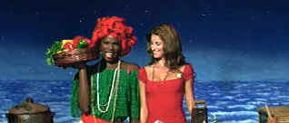

| Woman
on Top/C,A |
| Fox/2000/91/ANA
2.35 |
There is no denying the charm of Penelope
Cruz. The actress carries herself with innocent sexuality, obliviously ignoring the effect she has
on the opposite sex. The Spanish actress has lit up the screen in a number of European films and it
looks as if it will be an easy crossover into Hollywood mainstream for the ethnic looking beauty.
Finding the right vehicle for Cruz to drive audiences down a happy road is the Hollywood task at
hand. In Woman on Top, Cruz is photographed from every angle, and indeed the camera loves
her; but the screenwriter, at least the Woman on Top screenwriter, doesn't. Cruz has the
insurmountable task of bringing this insipid and often dimwitted fantasy to life. Not even a master
chef could make edible ingredients out of this hash of bad movie ideas.
 |
|
Monica displays the ingredients for Isabella.
©Fox |
A fairy tale narration along with
fantasy concept sets is meant to set the mood about amazing Isabella, a Brazilian woman with a
talent for cooking. She falls in love with an enterprising young man who parlays her talent and his
charm into a bristling successful restaurant on the charming coast of Brazil. But romance is
like a dish of sweet and sour pork; it can turn with a slip of the sauce. The husband, Toninho,
grows restless over Isabella's need to make love on top due to her motion sickness. Boy, take about
contrived plotting. Anyway, it's a great excuse for her to run away from her philandering husband
to the hills of San Francisco. Boy, did the producers of this film ever fail to find any charm in
the locales. Shame on you guys.
Once in the big city, Isabella rooms with her
transvestite girlfriend Monica who has set herself up in a nice apartment. What does she do for a
living? Meanwhile, armed with business cards left by admiring visitors to the Brazilian restaurant,
Isabella looks for work. She whips up some sensual cooking lessons at a culinary school, but before
long a local TV producer gets a whiff of her sensual delights and is producing an instant cooking
show for her. When Toninho arrives in pursuit of his love, the cooking show grows more complicated.
There are lots of possibilities here, but they mainly are treated with distain, failing even to
prepare any beautiful food concoctions. The only thing on display to whet appetites is Cruz, Cruz
and more Cruz. Okay, Cruz is appealing. Without Cruz, this fantasy on cruise control would never
have made to the shores of San Francisco.
What Woman on Top lacks in culinary esthetic, it makes up for by
dressing the lead actress in a succession of tight fitting and revealing outfits. Cruz is fun to
watch. She's clearly the best ingredient of Woman on Top. Harold Perrineau, Jr embodies the
transvestite spirit of Monica with good nature and genuine appeal, but the rest of the cast are
either overcooked or underdone.
This is a smashingly beautiful DVD. What glorious reds: intense,
saturated, rich enough to make fabrics and vegetables alike jump off the screen. Woman on Top
is a consistent explosion of color with a wide appealing fairy tale palette. Images are
consistently sharp. Details of fabrics, the glimmer of sexuality in Cruz's eyes, every sprout of
beard on Toninho's unshaved face is rendered with superb clarity. The Brazilian music is appealing
and the Dolby Digital 5:1 surround provides good ambient and music separation.
|
|

Selections from the Feature Archive
include articles on Akira Kurosawa, Frank
Darabont, Blonde Bimbos, Hollywood Street Gangs, or Vietnam: The
Hollywood Pariah, and many more....
Puttin on the
Ritz

Fred Astaire and Cyd Charisse bring Silk Stockings to life, a remake of Ninotchka, one of many
films successfully turned into musicals by the Hollywood dream factory. Read all about remakes into
musicals by clicking on the divine dancers.

 Have you visited Home Theater
Talk lately? One of the friendliest places on the Net for Home Theater and DVD discussion, you
can get help for installation problems or simply share your opinions with other Vidiots. Have you visited Home Theater
Talk lately? One of the friendliest places on the Net for Home Theater and DVD discussion, you
can get help for installation problems or simply share your opinions with other Vidiots.
Imaging Science Foundation
The Imaging Science Foundation promotes proper standards in home theater viewing. ISF trained
technicians offer monitor calibration services to consumers. The difference in a properly
calibrated monitor can be astounding. Click on the image to find an ISF member near you.
 Gary Morris's insightful publication Bright Lights
Film Journal turns the celluloid in films from a unique perspective. Click on the image above
for more pure movie views. Gary Morris's insightful publication Bright Lights
Film Journal turns the celluloid in films from a unique perspective. Click on the image above
for more pure movie views.

Cyber Theater is an outstanding source for accurate video information. Check out their 16 x 9
format guide for a thorough understanding of DVD encoded that way.

The
Movie Poster Archive includes extensive poster images from the films of stars like Susan Hayward,
Kirk Douglas, Katharine Hepburn and many more. Our featured star is Frank Sinatra.
|